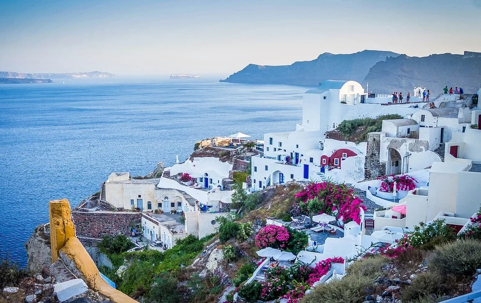

Auf dieser Blogseite findet ihr alle meine Reisen. Zum jeweiligen Land (Stadt) erzähle ich ein paar Fakte über den Ort. Zudem zeige ich euch was man unbedingt gesehen haben muss und dass man sich sparen kann. Ich kann nur von meiner Erfahrung berichten und wie ich die Reise erlebt habe. Man muss deshalb wissen, dass andere Menschen am gleichen Ort ganz andere Interessen haben und deshalb andere Erfahrungen sammeln. Zudem spielt es auch eine Rolle wie man reist und mit wem.

"Japan" Japan ist definitiv ein Reiseziel, das im deutschsprachigen Raum noch nicht so populär ist. Wenn du also auf der Suche nach einem außergewöhnlichem Ziel für deinen nächsten Urlaub bist, dann sollte Japan auf deiner Liste stehen. Was aber hat Japan zu bieten? In Japan findest du riesige Städte und mit Tokio eine der aufregendsten Metropolen der Welt. Obwohl Japan ein sehr modernes Land ist, hat das Land großartige Kulturgüter und Tempel zu bieten, aber auch Naturliebhaber kommen in Japan auf ihre Kosten.
"Florenz" Ich liebe Florenz und nach Italien reise ich sowieso einfach immer wieder gern. Florenz hat wirklich nur einen einzigen Nachteil: Wie schön die Stadt ist, wissen weltweit viele Menschen. Sehr viele Menschen! Denn in kaum einer europäischen Stadt habe ich so viele Touristengruppen auf einem Fleck gesehen wie in Florenz. Wir meckern aber auf sehr hohem Niveau, denn sonst kann ich wirklich nur schwärmen von bella Firenze in der Toskana. Die Piazza della Signoria ist der bekannteste Platz der Stadt und berühmt für die Kopie von Michelangelos David Statue, welche hier steht. Schon früher war hier das politische und soziale Zentrum der Stadt und auch heute ist hier noch so einiges los!

"Malediven" Traumhafte weisse Sandstrände, palmenbewachsene Inseln, türkisfarbene Lagunen, kristallklares Wasser und dazu eine Unterwasserwelt, die nur so vor Artenvielfalt und Farbe strotzt. Das sind die Malediven. Die Inselgruppe der Malediven liegt inmitten des Indischen Ozeans. Die Malediven bestehen aus rund 1’190 Inseln, von denen nur etwa ein Fünftel bewohnt sind. Da die Malediven eher von gut verdienenden Pauschalreisenden bereist werden, sind günstige Alternativen für Backpacker eher dünn gesät. Es gibt aber schon die Möglichkeit, die Malediven mit einem kleineren Budget zu bereisen. Die Malediven sind eine Ganzjahresdestination, denn es herrscht das ganze Jahr tropisches Klima mit Temperaturen zwischen 25 und 32 Grad. Die Hauptsaison ist von Dezember bis April. Während diesen Monaten ist das Wetter am stabilsten und die Niederschlagsmengen gering.
"Santorin" Santorin ist Griechenlands Perle, seine Vorzeigedame, ein wilder Vulkan voller romantischer Bauten und so einzigartig wie keine andere Insel auf unserer Erde. Aus diesem Grund ist dieses Fleckchen Erde längst kein Geheimnis mehr zahlreiche ineinander oder in die Insel verliebte Menschen strömen hierher. Wer das klassische Postkartenmotiv mit den blauen Dächern sucht, ist in Firá falsch! Der Ausblick ist wunderschön, zweifelsohne, aber das, was ihr sucht, findet ihr im Norden der Insel im Ort Oia. Dort sind zwar auch viele Touristen unterwegs, aber trotzdem mal viel weniger als in den Hauptstrassen von Firá, wo früh morgens im Hafen, am Fusse der halbmondförmigen Insel, tagtäglich unzählige Kreuzfahrtschiffe ankommen.
"Matterhorn" Das Matterhorn ist einer der höchsten Berge der Alpen. Wegen seiner markanten Gestalt und seiner Besteigungsgeschichte ist das Matterhorn einer der bekanntesten Berge der Welt. Für die Schweiz ist es ein Wahrzeichen und für Touristen eine grosse Attraktion. Der Berg steht im Wallis zwischen Zermatt und Breuil-Cervinia.
M152 Multimediainhalte in Webseite einbinden